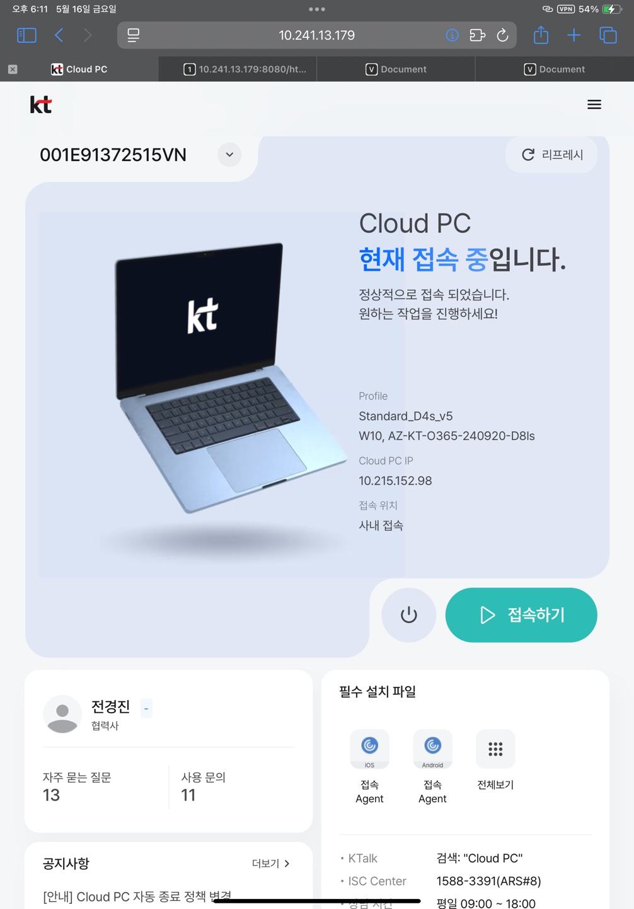

미해결 이슈 사항 1.
1) 현상 : 태블릿 홈화면 확대 시 배경 깨짐 2) 발생 이유 : 홈화면 배경 모양을 유지하는 반응형 구현으로 인해 이미지를 3등분하여 사용. 3) 결과 : 퍼블리싱으로 확대 방지 할 수 있는 모든 처리를 했으나 간헐적으로 확대가 되는 현상 발생 - 테블릿에서 두손가락 터치를 감지하여 확대 방지 처리- 더블 터치 감지하여 확대 감지 처리
- 메타 태그 확대 기능 사용 안함 처리
- css 확대 기능 사용 안함 처리
미해결 이슈 사항 2.
1) 현상 : 태블릿 홈화면 삽입된 비디오가 배경 색상과 다름  2) 발생 이유 : 기기마다 비디오 배경 색상과 홈화면 배경 색상이 달라보이는 이슈가 있어 비디오의 색상을 투명으로 요청함. (w. 디자인)비디오 배경 색상을 투명으로 추출하려면 webM 확장자를 사용해야 하는데, MAC 환경에서는 webM 확장자를 지원하지 않아 배경이 검은색으로 보이는 이슈가 있음.
따라서 윈도우는 webM (배경 투명), MAC 환경에서는 MP4 (배경 있음) 확장자를 사용하고 있음.
IOS 태블릿, 모바일 환경에서는 또 다른 배경 색상으로 보이고 있음. 3) 결과 : 디자이너와 추후 협의하며 비디오 교체가 필요해 보임. (MP4, webM는 유지)